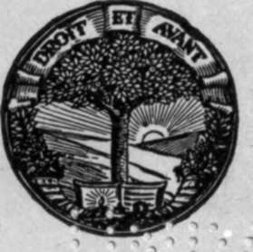

Airplane Photography | by Herbert E. Ives
Airplane photography had its birth, and passed through a period of feverish development, in the Great War. Probably to many minds it figures as a purely military activity. Such need not be the case, for the application of aerial photography to mapping and other peace-time problems promises soon to quite overshadow its military origin. It has therefore been the writer's endeavor to treat the subject as far as possible as a problem of scientific photography, emphasizing those general principles which will apply no matter what may be the purpose of making photographs from the air. It is of course inevitable that whoever at the present time attempts a treatise on this newest kind of photography must draw much of his material from war-time experience. If, for this reason, the problems and illustrations of this book are predominantly military, it may be remembered that the demands of war are far more severe than those of peace; and hence the presumption is that an account of how photography has been made successful in the military plane will serve as an excellent guide to meeting the peace-time problems of the near future.
| Title | Airplane Photography |
| Author | Herbert E. Ives |
| Publisher | J. B. Lippincott Company |
| Year | 1920 |
| Copyright | 1920, J. B. Lippincott Company |
| Amazon | Airplane photography |
By Herbert E. Ives, Major, aviation section, signal officers reserve corps, united states army; lately officer in charge of experimental department, photographic branch, air service.
208 Illustrations.
J. B. Lippincott Company
To My Wife: A helpful critic, even though she neither photographs nor flies.
 Preface
Preface- It is assumed that the reader is already fairly conversant with ordinary photography. Considerable space has indeed been devoted to a discussion of the fundamentals of photography, and to scientific m...
- I. Introductory. Airplane Photography. Chapter I. General Survey. Aerial Photography From Balloons And Kites
- Photography from the air had been developed and used to a limited extent before the Great War, but with very few exceptions the work was done from kites, from balloons, and from dirigibles. Aerial pho...
- Development Of Airplane Photography In The Great War
- The airplane has totally changed the nature of warfare. It has almost eliminated the element of surprise, by rendering impossible that secrecy which formerly protected the accumulation of stores, or t...
- Limitations To Airplane Photography Set By War Conditions
- The ability of the pilot to take the modern high-powered plane over any chosen point at any desired altitude in almost any condition of wind or weather gives to the plane an essential advantage over t...
- Chapter II. The Airplane Considered As A Camera Platform
- An essential part of the equipment of either the aerial photographer or the designer of aerial photographic apparatus is a working knowledge of the principles and construction of the airplane, and con...
- Construction Of The Airplane
- The modern airplane (Fig. 1) consists of one or more planes, much longer across than in the direction of flight {aspect ratio). These are inclined slightly upward toward the direction of travel, and t...
- Types Of Planes
- The most common type of plane is the biplane (Fig. 4), with its two planes, connected by struts and wires, set not directly over each other, but staggered, usually with the upper plane leading. Monopl...
- The Plane In The Air
- The first flight of the photographic observer or of the instrument expert who is to work upon airplane instruments is very profitably made as a joy ride, to familiarize him with conditions in the ai...
- Appearance Of The Earth From The Plane
- The view from the ordinary two-seater is greatly restricted by the engine in front and by the planes to either side and below (Figs. 7, 8, and 9). By craning his neck over the side, or by looking down...
- Airplane Instruments
- Mounted on boards in front of the pilot and observer are various instruments to indicate the performance of engine and plane (Fig. 2). Those of interest to the photographic observer are the compass, t...
- II. The Airplane Camera. Chapter III. The Camera - General Considerations. Chief Uses Of An Airplane Camera
- The kinds of camera suitable for airplane use and the manner in which they must differ from cameras for use on the ground are determined by consideration of the nature of the work they must do. Four k...
- Chief Differences Between Ground And Air Cameras
- Certain definite differences are thus seen to stand out between airplane cameras and the ordinary kind. It is essential that the apparatus for use in the air shall have high lens and shutter speed, me...
- The Elements Of The Airplane Camera
- Disregarding its means of suspension, the airplane camera proper consists essentially of lens, camera body, shutter, and plate or film holding and changing box. In certain of the aerial cameras dev...
- Types Of Airplane Cameras
- During the course of the war airplane cameras have been classified on various bases, in different services. In the French service, where the de Maria type of camera was standardized early in the war, ...
- Chapter IV. Lenses For Aerial Photography. General Considerations
- The design and selection of lenses for aerial photography present on the whole no problems not already encountered in photography of the more familiar sort. Indeed, the lens problem in the airplane ca...
- Photographic Lens Characteristics
- Whole volumes have been written on the photographic lens, and on the optical science utilized and indeed brought into being by its problems. Such works should be consulted by those who intend to make ...
- Spherical Aberration And Coma
- Suppose we focus on a screen, by means of a simple convex lens the image of a distant point of light. Suppose for simplicity that this image is located on the axis of the lens and that light of only o...
- Chromatic Aberration
- Because of the inherent properties of the glass of which it is made, a simple collective lens does not behave in the same way with respect to light of different colors. If one attempts, with such a le...
- Astigmatism And Covering Power
- Suppose the lens forms at some point off its axis an image of a cross. Suppose one of the elements of the cross to be on a radius from the center of the field, the other element parallel to a tangent....
- Illumination
- The amount of light concentrated by the lens on each elementary area of the image determines its brightness or illumination. The ideal image would, of course, be equally bright over its whole area of ...
- Distortion
- Sometimes a lens is relatively free from all the aberrations, mentioned above, so that it gives sharp, clear images on the plate, yet these images may not be exactly similar to the objects themselves ...
- Lens Testing And Tolerances For Aerial Work
- Simple and rapid comparative tests of lenses may be made by photographing a test chart, consisting of a large flat surface on which are drawn various combinations of geometrical figures—lines, squares...
- Lens Aperture
- In the simple lens the aperture is merely the diameter. In compound lenses the aperture is not the linear opening but the effective opening of an internal diafram. Photographically, however, aperture ...
- The Question Of Focal Length
- In aerial photography the lens is invariably used at fixed, infinity, focus. Under these conditions the simple relationship holds that the size of the image is directly proportional to the focal lengt...
- The Question Of Plate Size And Shape
- Plate size is determined by a number of considerations, scientific and practical. If the type of lens is fixed by requirements as to definition, then the dimensions of the plate are limited by the cov...
- Focussing
- The process of focussing aerial cameras was at first deemed a mystery, though undeservedly so. A belief was long current that ground focus and air focus differ. In other words, that a camera focus...
- Lens Mounts
- All that is required for the mounting of an aerial camera lens is a rigid platform, with provision for enough motion of the lens to adjust its focus accurately. As already explained, the lens works at...
- Chapter V. The Shutter. Permissible Exposure In Airplane Photography
- A definite limitation to the length of exposure in airplane cameras is set by the motion of the plane. If we represent the speed of the plane by S, the altitude of the plane by A, and the focal length...
- Characteristics Of Shutters Located At The Lens
- Of the various shutters located at the lens the most common is the type that is clumsily but descriptively termed the between-the-lens shutter. This is composed of thin hard rubber or metal leaves o...
- Characteristics Of The Focal Plane Shutter
- Long before the days of aerial photography the problem of a high be F/N, the width of the slot be a, and the distance from plate to curtain d (Fig. 21). Now if the curtain is moving at a uniform speed...
- Distortions Produced By The Focal Plane Shutter
- While the time of exposure of any point on the plate can, with the focal-plane shutter, easily be made two second or less, the whole period during which the shutter is moving is much greater than this...
- Methods And Apparatus For Testing Shutter Performance
- With a focal-plane shutter the desirable qualities in performance are three in number: (1) Adequate speed range, which may be taken as from 5V to -5^0 second for aerial work, (2) good efficiency, whic...
- Types Of Focal Plane Shutters
- A variety of means have been utilized for securing the necessary variation in speed in focal-plane shutters. Their success is to be measured by the actual speed range and by the uniformity of speed at...
- Representative Shutters
- The Folmer variable tension shutter is used on the United States Air Service hand-held and hand-operated plate camera and on some of the film cameras. It consists of a fixed aperture curtain wound on ...
- Chapter VI. Plate-Holders And Magazines
- In the earlier days of airplane photography the ordinary plate-holder or double dark slide was used to some extent, but it is ill-suited to the purpose because of the considerable time and attention r...
- Chapter VII. Hand-Held Cameras For Aerial Work. Field Of Use
- The first cameras to be used for aerial photography were hand-held ones of ordinary commercial types. Indeed the idea is still prevalent that to obtain aerial photographs the aviator merely leans over...
- Essential Characteristics
- In addition to the general requirements as to lens, shutter and magazine, common to all aerial cameras, the hand camera must meet the special problems introduced by holding in the hands, especially ov...
- Representative Types Of Hand Held Cameras
- French And German Hand-Held Cameras French And German Hand-Held Cameras are essentially smaller editions of their standard long-focus cameras, and a description of them will apply to a considerable...
- United States Air Service Hand Cameras
- The hand camera developed for the United States Air Service and manufactured by the Eastman Kodak Co. is made in three models, using the bag magazine, a two-compartment magazine, and roll film, respec...
- Chapter VIII. Non-Automatic Aerial Plate Cameras
- The ideal of every military photographic service has been an automatic or at least a semi-automatic camera, in order to reduce the observer's work to a minimum. Yet as a matter of fact almost all the ...
- General Characteristics Of Hand Operated Cameras
- As distinguished from the hand-held cameras the larger hand-operated cameras are characterized by the greater focal length of their lenses, the size of plate employed, and the manner of holding—by som...
- Chapter IX. Semi-Automatic Aerial Plate Cameras
- In the hand-operated camera the limit to progress is set when the number of operations is reduced to a minimum. In cameras using the larger sizes of plates a reduction in the number of operations almo...
- The English L Type Camera
- The L, a modification of the earlier C and E models, differs from its predecessors chiefly in the addition of a mechanism which when connected with one loaded magazine is about 35 pounds. Its manner o...
- The English Lb And Bm Cameras
- During the closing months of the war an improved L type camera was constructed, the LB. This differs from the L in a number of detail changes, dictated by experience. The shutter is now made removable...
- The American Model Deram Camera
- The rotary changing box devised by Lieutenant deRam of the French army and incorporated in his entirely automatic plate camera, has been adapted by the American Air Service to a very successful semi-a...
- Chapter X. Automatic Aerial Plate Cameras. General Characteristics
- The ideal in the automatic-plate camera is to provide a mechanism which will not only change the plates and set the shutter, as does the semiautomatic, but make the exposures as well, at regular inter...
- The Brock Automatic Plate Camera
- This camera is somewhat similar to the same designer's film camera, both in shape, in size, and in its employment of a heavy spring motor for the driving power. It uses 4X5 inch plates, and carries a ...
- Folmer 13x18 Centimeter Automatic Camera
- This camera, also never manufactured in quantity, is shown in Fig. 53, and a sketch of its manner of operation is included in by the motion of a rack, which is part of the magazine and which is driven...
- The De-Ram Camera
- The only completely automatic plate camera actually produced commercially before the end of hostilities was the French model deRam (Fig. 54). Its plate-changing action has already been described in co...
- Chapter XI. Aerial Film Cameras
- The weight of the glass and the sheaths in the plate camera forms its most serious drawback. This weight must be reckoned at least three quarters, of a pound for each 18 X24 centimeter plate. Conseque...
- Methods Of Holding Film Flat
- Several means have been proposed and used for holding the film flat. Disregarding mere pressure guides at the side, which are suitable only for small area films (up to 4X5 inch), the successful means ...
- Representative Film Cameras. The English F Type (Williamson)
- This is one of the earliest cameras designed for film, as is indicated by the nature of the power drive, which presupposes that the camera is to be carried on the outside of the fuselage. Its essentia...
- The Duchatellier
- The Duchatellier camera is essentially a film magazine to fit on the standard French deMaria camera bodies, of the 18X24 centimeter size. In its simplest form it embodies a shutter (the regular focal-...
- The G. E. M. Camera
- The G. E. M. Camera (Fig. 59) is a very light self-contained clockwork-drive camera taking 36 pictures six inches square. The film is unrolled from a small-diameter feeding roller on to a large-diamet...
- The Brock Film Camera
- The Brock Film Camera (Fig. 60) is an entirely automatic, very compact self-contained camera, taking one hundred 4X5 inch pictures. The motive power is clockwork, regulated in speed by an escapement c...
- The German Film Mapping Camera
- The German Film Mapping Camera, shown in Fig. 61, is distinguished by a number of special features. The size of the pictures, 6X24 centimeters, is unusual. It has its advantages, however. Since the sh...
- United States Air Service Automatic Film Camera. Type K (Figs. 64, 65, 92, 93, 98, 99)
- This is an entirely automatic camera, manufactured by the Folmer and Schwing Division of the Eastman Kodak Co., taking 100 pictures of 18X24 centimeter size at one loading. As with all the American ca...
- Chapter XII. Motive Power For Aerial Cameras
- As long as circumstances permit, hand operation still remains the most reliable and satisfactory method of driving a camera. It is always available, can be applied to just the amount desired, and at t...
- Available Sources Of Power For Camaras
- The sources from which power may be drawn on the plane are four, although the various combinations of these present a large number of alternative approaches to the problem. These sources are: 1. Th...
- Performance And Efficiency Data
- The first step in deciding upon methods of power drive, and indeed in deciding whether power drive is feasible at all, is to assemble definite data as to the power required to drive representative cam...
- Control Of Camera Speed
- In the semi-automatic camera the only control required on the speed of the operating motor is at the upper and lower limits. It must not go so fast as to anticipate the completion of any steps in the ...
- Transmission Of Power To The Camera
- It has already been pointed out that the ease of transmission of electrical energy makes it particularly convenient for use in a plane. All other sources of power, except clock-work incorporated in th...
- Chapter XIII. Camera Auxiliaries. Distance Controls And Indicators
- All operations connected with the exposing and changing of plates (except the changing of whole magazines) should be arranged for accomplishment at a distance. Other operations, such as changing the s...
- Sights
- In airplane photography the need for a finder or sight is fully as great as in everyday work. A new condition, however, prevails, for except with hand-held cameras, and even to some extent with them, ...
- Sights For Hand Held Cameras
- The simplest form of sight attached directly to the camera is modeled on the gun sight, consisting of a forward point or bead and a rear V. This, sight of course serves merely to place the objective i...
- Sights Attached To The Plane
- Any of the sights just described can be attached to cameras fixed in the plane, but they would be useless in the positions ordinarily occupied by the camera. It has therefore become common practice to...
- Devices For Recording Data On Plates
- Numbering Devices The number of the camera is impressed on negatives taken with the American L camera through the agency of a small transparent corner of celluloid. It would be entirely possible to...
- III. The Suspension And Installation Of Airplane Cameras. Chapter XIV. Theory And Experimental Study Of Methods Of Camera Suspension. General Theory
- In addition to the limitation of exposure set by the ground speed of the plane another limitation is set by the vibration of the camera. This may be caused either by the motor, or by the elastic react...
- Experimental Study Of Methods Of Camera Support
- Conclusive evidence as to the merits of any system of camera mounting can be obtained only under conditions that eliminate the effect of other variables which may be equally efficacious in diminishing...
- Pendular Camera Supports
- The design of the camera support may be approached from a different standpoint, namely, with the aim of carrying the camera so that it will tend to hang always vertical. In mapping this is of fundamen...
- Gyroscopic Mountings
- The ideal support for the aerial camera will undoubtedly be one embodying gyroscopic control of the camera's direction. By proper utilization of the principles of the gyroscope it is to be expected th...
- Chapter XV. Practical Camera Mountings. General Considerations
- Camera mountings as used during the war were far from being developed on the basis of scientific study or test. At first the need for special supporting apparatus was not realized, and the suspensions...
- Outboard Mountings
- In the English service the camera was first attached to the plane outside the fuselage by a rigid frame, to which the camera was strapped or bolted (Fig. 81). Obvious objections exist to placing the c...
- Floor Mountings
- A step in advance of the outboard mounting is to support the camera snout in a padded conical frame on the floor of the plane (Fig. 82). This mounting avoids the objection on the ground of wind resist...
- Cradles Or Trays
- Floor space in the cockpit being unavailable in the battle-plane, due to duplicate controls, bomb sights, etc., the English service was driven to the practice of carrying the camera in the compartment...
- Tennisball Mounting
- A very simple mount used by the French consists of a frame enclosing the nose of the 84 show an American L camera cradle based on the design of the English L camera tray. Thick sponge rubber pads supp...
- Parallel Motion Devices
- A form of suspension favored by the French consists of parallel bell cranks, rigidly linked together and held up by springs. Mountings of this sort are illustrated in Figs. 86, 87, 88 and 96. The guid...
- Center Of Gravity Rubber Pad Supports
- Given a camera whose center of gravity does not change during operation, a simple and entirely adequate anti-vibration support is furnished by a ring of sponge rubber in the plane of the center of gra...
- The Italian And G. E. M. Mountings
- These mounts (Figs. 49 and 59) are similar in that the protection from vibration is furnished by an elastic support at the bottom of the camera. Tests show that these two cameras give very similar res...
- The Brock Suspension
- This consists of a pair of frames into which the camera is fitted by ball bearing pivots, so that it is free to move in any direction (Fig. 60). In order to permit gravity to control the direction of ...
- Chapter XVI. The Installation Of Cameras And Mountings In Planes. Conditions To Be Met
- The characteristic difficulty in installing the airplane camera is that there is no place for it. After the gasoline supply, the armament, the wireless, the oxygen tank, the bombs, and other necessiti...
- Practical Solutions For Problems In Installation Of Cameras And Mountings In Planes
- An important feature of camera installation has already been mentioned, but may well be repeated for emphasis. The camera and its anti-vibration mounting should always be considered as a unit, and sho...
- Installation Of Auxiliaries
- It is quite necessary that the camera lens be protected from splashing mud and often from oil spray due to the motor. For this purpose an easily opened and closed door is essential, unless the camera ...
- IV. Sensitized Materials And Chemicals. Chapter XVII. The Distribution Of Light, Shade And Color In The Aerial View
- The general appearance of the earth as viewed from above has already been described and illustrated (Figs. 10 and 11). It remains to deal with the earth's appearance in a more analytic and quantitativ...
- The Photographic Requirements Dictated By Brightness And Color Considerations
- Considering only the demands made by the character of the view presented to the airplane camera, and leaving out of account other limitations to photographic operations in the plane, certain requireme...
- Chapter XVIII. Characteristics Of Photographic Emulsions
- The purely photographic problem in aerial photography, as distinct from the instrumental one, is the selection of photo sensitive materials which will yield useful results under the conditions peculia...
- Sensitometry
- The most generally used system of sensitometry is that of Hurter and Driffield, commonly referred to as the H & D. By this system, in order to determine the characteristics of a given photographic p...
- Criteria Of Speed
- In airplane photography speed is of paramount importance, but great care must be exercised to insure that all the factors are considered which can contribute toward yielding the desirable pictorial qu...
- Effect Of Temperature On Plate Speed
- It has been found by Abney and Dewar that very low temperatures materially decrease the speed of photographic emulsions. This decrease may amount to as much as 50 per cent, in the temperature range fr...
- Color Sensitiveness
- Complete specifications for an aerial plate cannot be made solely on the basis of its speed, contrast, latitude, threshold, and other sensitometric values which have to do only with the intensity of t...
- Resolving Power
- A question which arises in connection with all photography of detail is the size of the grain of the photographic emulsion. Dependent on the size of the grain is the resolving power, or ability to sep...
- Tabulation Of Requirements For Aerial Emulsions
- In terms of the sensitometric quantities just discussed the general requirements for aerial plates may be listed as follows: 1. Speed The speed usually connected with the contrast and density re...
- Relative Behavior Of Plates And Films
- The advantages of film from the standpoint of weight and bulk have been discussed in connection with aerial cameras. Were there no other considerations film would unquestionably be the most appropriat...
- Positype Paper
- The need sometimes arises in military operations to secure prints ready for examination within a few minutes after the receipt of the negatives. Even the 15 or 20 minutes within which a negative can b...
- Plates And Films Found Satisfactory For Aerial Work
- The following plates and films have been found particularly good for aerial photography. The list is not intended to be complete. Furthermore, it may be expected to be soon superseded, as the efforts ...
- Chapter XIX. Filters. The Function Of Filters In Aerial Photography
- The use of color screens or filters has been very common in ordinary landscape photography, for the purpose of securing approximately correct renderings of the brightnesses of colored objects. Plates ...
- Practical Filters
- Since the character of the absorption of the K filters is not all that could be desired, new filters, both of dyed gelatin and of glass, have been produced. The glass, a Corning product having a ver...
- Effects Secured By The Use Of Filters
- The efficiency of yellow filters for haze-cutting is best shown by photographs taken at high altitudes with filters and without. Such illustrations are given in Figs. 107 and 108, where the first phot...
- Filters For The Photographic Detection Of Camouflage
- In the photographic as in the visual detection of camouflage, the problem is to differentiate colors which ordinarily look alike, but which are actually of different color composition. Particularly im...
- Methods of Mounting And Using Filters
- Themost primitive way of mounting a gelatin filter is to cut a disc from a sheet of dyed gelatin and insert it between the components of the lens. For this purpose the gelatin must be perfectly flat, ...
- Self Screening Plates
- Mention must be made of a quite different mode of realizing the filter idea, a method available where the sensitive plate is always to be used with a filter. This is to incorporate a yellow dye in the...
- Chapter XX. Exposure Of Aerial Negatives
- The principal factors governing the length of exposure in the airplane camera have already been discussed under various headings. These are briefly, the nature of the aerial landscape, the practically...
- Limitations To Exposure
- In the ordinary photography of stationary objects, exposure is a variable entirely at the operator's command. Plates of any speed may be selected, so that attention may be focussed on latitude, color ...
- Estimation Of Exposure
- According to the foregoing argument the problem of estimating an aerial exposure resolves itself largely into one of deciding how short this may be made. Or, if the light is strong, whether it is suff...
- Chapter XXI. Printing Media
- Skilled photographers can examine a negative and can interpret its renderings with practically as much satisfaction as they get from a print, whereby a considerable amount of time can be saved in an e...
- Transparencies
- Transparencies are made by the regular photographic processes of exposure and development, on glass plates or films placed in contact with the negative, or in the appropriate position in an enlarging ...
- Paper Prints
- Prints on paper suffer by compariscn with transparencies, in the range of tones which they exhibit. This lies between the white of the paper, which never has more than 80 per cent, reflecting power, a...
- Chapter XXII. Photographic Chemicals. General Considerations
- Developing, fixing and other chemicals for aerial work differ in no essential respect from those used in ordinary photography. Full discussions of these are to be found in numerous texts and articles....
- Characteristics Of Developers For Plates And Films
- From the standpoint of practicability, aerial negative developers should have good keeping power, be slow to exhaust, and work well over a considerable range of temperatures. From the standpoint of th...
- Practical Developers For Aerial Negatives
- In the English service a pyro metol developer was generally used, producing stained negatives. The French, American and Italian practice was to use metol-hydrochinon, without staining. A special chlor...
- V. Methods Of Handling Plates, Films And Papers. Chapter XXIII. The Developing And Drying Of Plates And Films. Field Requirements
- Developing, fixing, drying and printing in the field demand simple and convenient apparatus that may be carried about and installed with the least amount of labor. On top of these requirements militar...
- Methods Of Plate Development
- Where speed is not required the simplest and commonest mode of developing plates is in the tray, one plate at a time. Common practice is to examine the plate at intervals during development, and disco...
- Film Developing And Fixing
- The problem of quicky handling roll film of large size is one upon whose solution depends in large degree the feasibility of film cameras for aerial work. It presents many difficulties: a long film is...
- Plate Drying
- The drying of negatives on glass is a comparatively simple matter, owing to the rigid nature of the emulsion support. A large number of plates may be placed in a compact mass in the ordinary plate rac...
- Film Drying
- Unlike the drying of plates, drying of film negatives is a very puzzling problem, and may be considered as the crux of the successful use of film in aerial cameras. Apron and similar machines have ...
- Marking Negatives
- After development and drying, and before filing or printing, each plate should be marked with data for purposes of future identification. This is most easily done with pen and ink on the film side (in...
- Chapter XXIV. Printing And Enlarging. Contact Printing
- Single prints are made most simply in a printing frame held at a short distance from a light source. When any quantity must be made, as in turning out prints at high speed for distribution to an army ...
- Stereo Printing
- To make separate prints from the two elements of a stereoscopic pair and mount them side by side after proper orientation is too slow a process if quantities of prints are needed. One method of multip...
- Enlarging
- In the French service contact printing was the rule during the war. The English practice, on the other hand, was to take small negatives—4X5 inches, with 8 to 12 inch lenses—and enlarge them, usually ...
- Rectifying
- Negatives taken when the plane is not flying level will be distorted (Figs. 134 and 135). Contact prints from these will not fit into a mosaic, and no mere enlargement or reduction will make them avai...
- Developing And Drying Prints
- The developing of prints follows closely that of cut or roll film, and so need not be treated separately. The drying of emulsions on paper is more easily accomplished than the drying of emulsions o...
- VI. Practical Problems And Data. Chapter XXV. Spotting
- Spotting, as distinct from mapping or from the photography of continuous strips, is the photography of a definite individual objective. In military work spotting or pin pointing includes the phot...
- Chapter XXVI. Map Making. Technique Of Negative Making
- Stated in its simplest terms, the whole problem of making a photographic map from the air consists in taking a large number of slightly overlapping negatives, all from the same altitude, with the plan...
- Cameras And Auxiliaries For Map Making
- Mapping can be done quite satisfactorily by hand operated or semiautomatic cameras, provided the observer has not too many other duties. On the other hand, the operation of exposing at more or less de...
- Printing And Mounting Mosaics
- With an ordinary set of overlapping negatives the first step toward producing a map is to scale the negatives. For this purpose one should be selected which by comparison with a map shows no distortio...
- Chapter XXVII. Oblique Aerial Photography
- Oblique views from the airplane are of very great value. While vertical views are more searching in many respects, they do nevertheless present an aspect of the earth with which ordinary human experie...
- Methods And Apparatus For Oblique Photography
- The simplest method of taking oblique pictures from a plane is to use a hand camera pointed at the desired angle. Its limitations are in the size and scale of the picture obtainable, and in the inhere...
- Sights For Oblique Photography
- Any of the sights previously discussed for vertical work, such as the tube sights, are applicable to obliques. They must, however, be suited for mounting at an angle, in a position convenient for the ...
- Chapter XXVIII. Stereoscopic Aerial Photography
- One of the most striking and valuable developments in aerial photography has been the use of stereoscopic views. Pairs of pictures, taken with a considerable separation in their points of view and stu...
- Principles Of Stereoscopic Vision
- The ability to see objects in relief is confined solely to man and to a few of the higher animals in whom the eyes are placed side by side. When the eyes are so placed they both see, to a large extent...
- Stereoscopes
- The easier and more usual method of fusing the stereoscopic images is by a stereoscope. The simplest form consists merely of two convex lenses, one for each eye, their centers separated by a distance ...
- The Taking Of Aerial Stereograms
- The normal separation of the eyes is altogether too small to give an appearance of relief to objects as far away as is the ground from a plane at ordinary flying heights. In order to secure stereoscop...
- Elevation Possible To Detect In Stereoscopic Views
- Can the actual difference in elevation be discovered by the use of stereoscopic views? An approximate idea may be obtained from the following considerations: Suppose we have two small point-like objec...
- Stereoscopic Aerial Cameras
- Cameras for aerial stereoscopic photography need in no way differ in construction from those made for mapping or spotting, provided only they permit exposures to be made at short enough intervals. The...
- Stereo Obliques
- The theory of making oblique stereo pictures is identical with that of other stereos. The only problem peculiar to obliques is that of making the exposures at short enough intervals apart. This proble...
- The Mounting Of Aerial Stereograms
- The first step in making the printed stereogram is to select two pictures taken on the same scale, but from slightly different positions. These may be two chosen from a collection made for other purpo...
- Uses Of Stereoscopic Aerial Views
- Attention has already been called to the characteristic flatness of the aerial view. Neither the picture on the retina nor that on the photographic plate affords any adequate idea of hills and hollow...
- Impression Of Relief Produced By Motion
- An appearance of solidity can be obtained in moving pictures by the simple expedient of slowly moving the camera laterally as the pictures are taken. As an illustration, if the moving picture camera i...
- Chapter XXIX. The Interpretation Of Aerial Photographs
- Oblique aerial photographs if on a large, enough scale are even easier to interpret than are ordinary photographs taken from the ground, since they practically preserve the usual view, and add to it t...
- The Interpretation Of Aerial Photographs. Continued
- Minute changes, both in light and shade and in position, must be watched for with great care. Naturally growing foliage and the cut branches used for camouflage differ in color progressively with the ...
- Chapter XXX. Naval Aerial Photography
- The problems of naval aerial photography are qiute different from those of military aerial work, and on the whole they are more simple. At the same time, photography has played a considerably less imp...
- VII. The Future Of Aerial Photography. Chapter XXXI. Future Developments In Apparatus And Methods
- Prophecy is an undertaking that always involves risk. The prophet's guess of what the future will bring forth is based only on the tendencies of the past, the most urgent needs of the present, and the...
- Chapter XXXII. Pictorial And Technical Uses
- Aside from their element of novelty, aerial photographs have undouted qualities of beauty and utility. The bird's-eye view has always been a favorite for revealing to the best advantage the entire f...
- Chapter XXXIII. Exploration And Mapping
- Aerial photographic mapping in war-time has been almost entirely confined to inserting new details in old maps. For such work some distortion or a lack of complete information on altitude and directio...